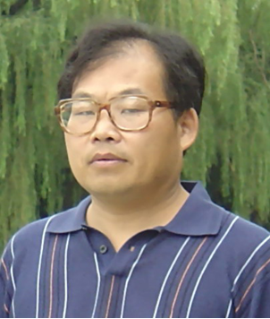

您所在的位置: 首页 > 教师介绍
-
—— 教授名录 ——
-
戴华
 男，1959年7月生。1988 年毕业于南京大学数学系，并取得博士学位，之后一直在南京航空航天大学工作。 1994 年和 1998 年分别在加拿大 Calgary 大学和法国 CERFACS 进修一年和半年。 1995 年晋升教授， 1999 年被评为博士生导师。 先后为本科生、研究生讲授不同的数学课程近 20 门，指导多名硕士生和博士生。先后承担国家自然科学基金项目 3 项，江苏省自然科学基金项目 2 项，教育部留学回国人员科研基金项目、江苏省“ 333 工程”基金项目和江苏省“青蓝工程”基金项目各 1 项，主要从事大型线性方程组数值方法、矩阵特征值问题数值解法、代数特征值反问题、矩阵方程与矩阵逼近、动力学反问题等方面的研究，取得了一系列研究成果。获得了多项奖励和表彰。
男，1959年7月生。1988 年毕业于南京大学数学系，并取得博士学位，之后一直在南京航空航天大学工作。 1994 年和 1998 年分别在加拿大 Calgary 大学和法国 CERFACS 进修一年和半年。 1995 年晋升教授， 1999 年被评为博士生导师。 先后为本科生、研究生讲授不同的数学课程近 20 门，指导多名硕士生和博士生。先后承担国家自然科学基金项目 3 项，江苏省自然科学基金项目 2 项，教育部留学回国人员科研基金项目、江苏省“ 333 工程”基金项目和江苏省“青蓝工程”基金项目各 1 项，主要从事大型线性方程组数值方法、矩阵特征值问题数值解法、代数特征值反问题、矩阵方程与矩阵逼近、动力学反问题等方面的研究，取得了一系列研究成果。获得了多项奖励和表彰。 -
李鹏同
 男，1964年3月生。多年来，一直从事《高等数学》、《数学分析》、《实变函数》、《泛函分析》、《算子代数》、《抽象代数》等本科生和研究生的教学工作，教学效果优良。在算子代数，尤其是非自伴算子代数方面取得了多项有价值的研究成果，受到了国内外同行的关注。目前，承担校科研创新基金项目1项。2003年1月，获南京大学优秀博士后一等奖。
男，1964年3月生。多年来，一直从事《高等数学》、《数学分析》、《实变函数》、《泛函分析》、《算子代数》、《抽象代数》等本科生和研究生的教学工作，教学效果优良。在算子代数，尤其是非自伴算子代数方面取得了多项有价值的研究成果，受到了国内外同行的关注。目前，承担校科研创新基金项目1项。2003年1月，获南京大学优秀博士后一等奖。 -
张鲁明男，1957年2月生。1982.1本科毕业于华东石油学院后留校任教，1990西北工业大学硕士毕业，1990-1996石油大学讲师、副教授，1996-1999中科院应用数学所，博士，1999-2001石油大学，副教授、教授，2001.9-至今 南京航空航天大学教授。主要从事物理学中非线性发展方程差分解法的研究，如正则长波方程、Sine-Gordon方程、Klein-Gordon方程、非线性Schrodinger类方程、以及Klein-Gordon方程和非线性Schrodinger方程耦合的方程组等方程的差分解法，特别是对Klein-Gordon和非线性Schrodinger耦合方程组首次提出了差分解法。现已发表论文30多篇，其中4篇被SCI检索。担任国内权威数学期刊《应用数学学报》和《计算数学》审稿人。
-
古志鸣
 男，1946年10月生。本科与研究生均毕业于南开大学数学系，颇得该校真传。对数学的基础理论有较深的理解，对数学的各主要分支均有兴趣。长期在几何与拓扑学方面从事教学和研究工作，特别在吴文俊的关于可剖形的拓扑不变量方面做出了若干成果。对几何与拓扑学在物理及力学上的应用长期保持兴趣，近期又开始关注复杂系统中的数学问题，并在这些方面取得一些成绩。在数学教学方面有心得，有特色，尤其注重对基本概念和基本理论的讲解和训练，得到各方面的肯定。
男，1946年10月生。本科与研究生均毕业于南开大学数学系，颇得该校真传。对数学的基础理论有较深的理解，对数学的各主要分支均有兴趣。长期在几何与拓扑学方面从事教学和研究工作，特别在吴文俊的关于可剖形的拓扑不变量方面做出了若干成果。对几何与拓扑学在物理及力学上的应用长期保持兴趣，近期又开始关注复杂系统中的数学问题，并在这些方面取得一些成绩。在数学教学方面有心得，有特色，尤其注重对基本概念和基本理论的讲解和训练，得到各方面的肯定。 -
安玉坤男。长期从事基础数学和应用数学专业、非线性泛函分析方向有关课题的学习、教学和研究。主要兴趣在运用非线性泛函分析的工具讨论常、偏微分方程的边值问题，特别是半线性弦与梁方程、弦梁耦合方程组及椭圆方程组。多年来，已在《数学进展》、《Nonlinear Analysis》、《Journal of Mathematical Analysis and Application》、《Applied Mathematics and Computation》等国内外重要杂志发表论文二十余篇，期中有八篇发表在SCI收录的杂志上。这些论文分别建立了阻尼吊桥方程大振幅周期解的存在性；非线性弦梁系统静态问题解的存在性和唯一性；弦梁系统动态问题周期解的存在性；以及一些推广的关于二、四阶椭圆方程组解的存在性结果。参与研究的课题“非线性常微分方程多点边值问题”获2002年度甘肃省教育厅“科学技术进步一等奖”，参与研究的课题“线性方程的非线性扰动” 分别获1995年度甘肃省教委“科学技术进步一等奖”和1996年度甘肃省“科学技术进步三等奖”。
-
赵洪涌男，1967年6月生。长期从事时滞微分方程、动力系统、神经网络、数学生态学与传染病动力学方面的教学与科研工作.在吸引子、稳定性、收敛性、周期性、分岔与混沌等方面取得了许多研究成果. 参与主研国家自然科学基金3项,主持校级及校创新基金3项.主编教材一部;获得省级科研奖励2等奖一项,校级科研奖励4项。
-
岳勤男，1964年1月生。主要研究兴趣代数数论和代数理论，对于一般数域的的代数整数环的K2群研究它的4-秩和8秩，同时研究了在二次数域上的4-秩密度，把著名猜想在这个群上给了一个表现。另外还刻画一般环上同调性质和环性质。在这些研究方向上，已经发表了20多篇文章在国际和国内核心刊物上，SCI文章10篇，其中包刮数学重要核心刊物J. reine angew Math.，J.Algebra等数论国际核心刊物，与著名台湾教授于靖和美国教授J. Hurrelbrink等合作文章。一系列科研结果已经被他人多次引用和国际会议上介绍，被美国数学会邀请为数学研究评论员。曾经在复旦大学数学所做博士后二年，访问台湾中研究院半年，访问意大利理论物理中心4个月，多次访问中国科学院数学所。主持多项国家和省级自然科学基金，现正主持一项国家自然科学基金。曾获得中国科学院研究生院长优秀奖学金，和江苏省青蓝青年骨干教师称号。
-
殷洪友男，1958年7月生。长期担任高等学校数学基础课教学工作。从1993年起，开始从事最优化理论和算法方面的研究，先后师从著名优化专家张可村教授和徐成贤教授，对不可微优化、非凸规划、变分不等式和互补问题有专长，获得了较多的成果。表现为：给出了拟可微优化问题的多个最优性条件和新的约束规范，研究了拟可优化问题的精确罚函数性质。构建了向量变分不等式和向量互补问题的统微一形式，给出了统一的解的存在定理和解集的拓扑性质，给出了它们在向量优化中的应用。引入并研究了互补问题的扰动问题，所获得的结果为构造互补问题的算法、研究互补问题解的稳定性提供了新工具。在“数学学报”、“应用数学学报”等国内外学术刊物上发表科研二十余篇，其中被美国数学评论检索3篇。与他人合作申请国家自然科学基金二项。从1999年起，获校教学优秀二等奖两项，校教学成果一等奖一项，主持校重点教改项目一项。
-
张国玳女。
-
倪勤
 男，1957年5月生。现任数学系教授。除教学外科研主要从事计算数学和管理科学方面的研究。具体研究非线性规划理论，方法，软件及应用等。主持和参加科研和教改项目 6 项，其中主持完成国家自然科学基金项目两项。发表学术论文 30 余篇，其中《 Mathematical Review 》评论 14 篇， SCI 收录 8 篇， EI 收录 1 篇。
男，1957年5月生。现任数学系教授。除教学外科研主要从事计算数学和管理科学方面的研究。具体研究非线性规划理论，方法，软件及应用等。主持和参加科研和教改项目 6 项，其中主持完成国家自然科学基金项目两项。发表学术论文 30 余篇，其中《 Mathematical Review 》评论 14 篇， SCI 收录 8 篇， EI 收录 1 篇。 -
陈芳启男，1963年10月生。1988.7 于曲阜师大数学系获理学硕士学位，研究方向：算子理论与算子代数，导师：龚为邦教授。1988.7-1995.8 在山东农大任教， 1991.2 聘为讲师， 1992.2-1995.8 任数学教研室主任。1995.9-1998.6 在山东大学数学院读博士研究生，获理学博士学位，研究方向：非线性分析，导师：郭大钧教授。1998.7-2000.5 在天津大学力学博士后站从事博士后研究工作，研究方向：非线性振动系统动力学理论，合作导师：陈予恕教授， 2000.5 出站，聘为副教授。2000.5 — 在天津大学数学系任教， 2002 年破格晋升教授， 2003 年聘为一般力学与力学基础 专业博士生导师。
-
陆云光男。
-
-
—— 副教授名录 ——
-
—— 讲师名录 ——